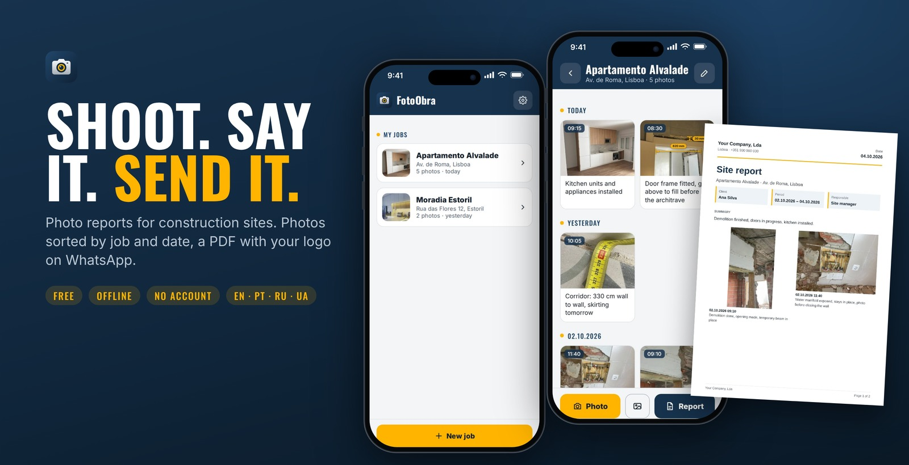
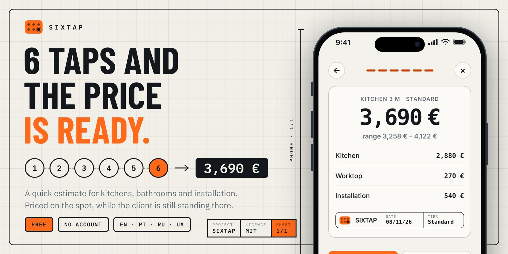
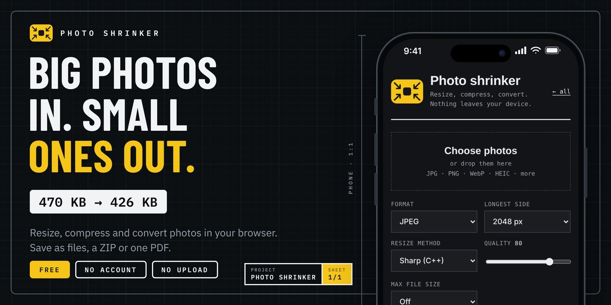
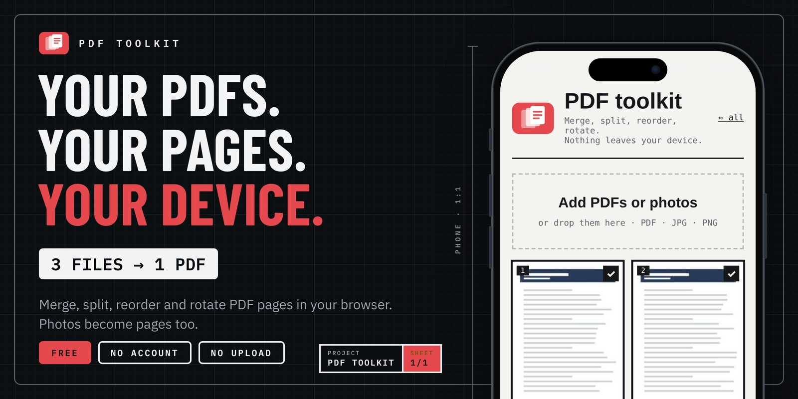
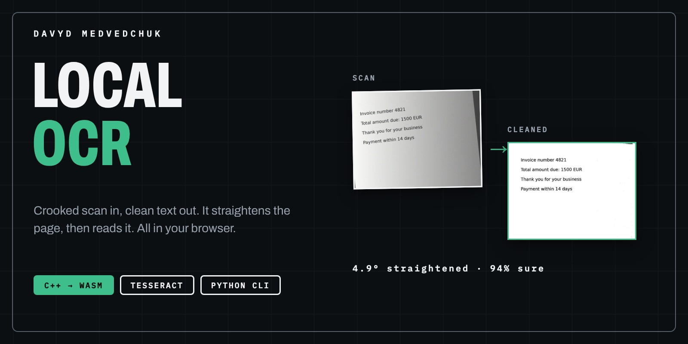
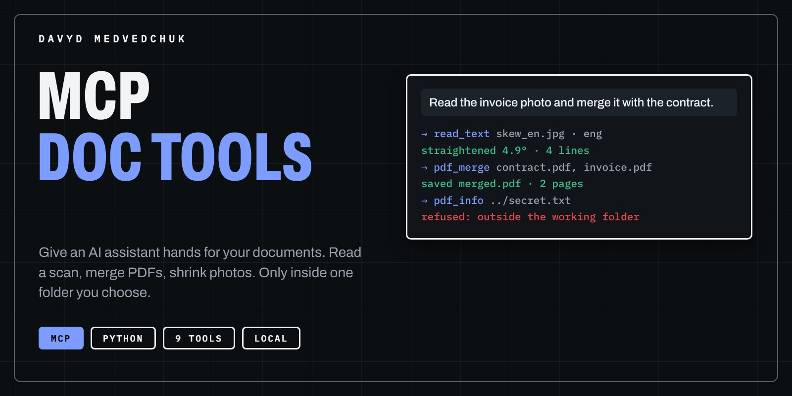
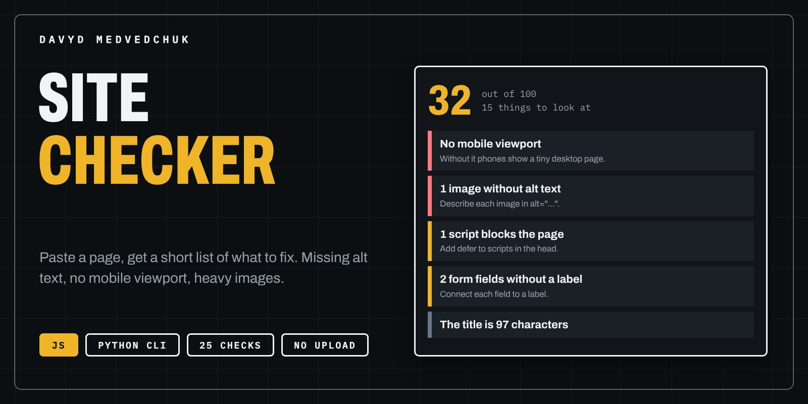
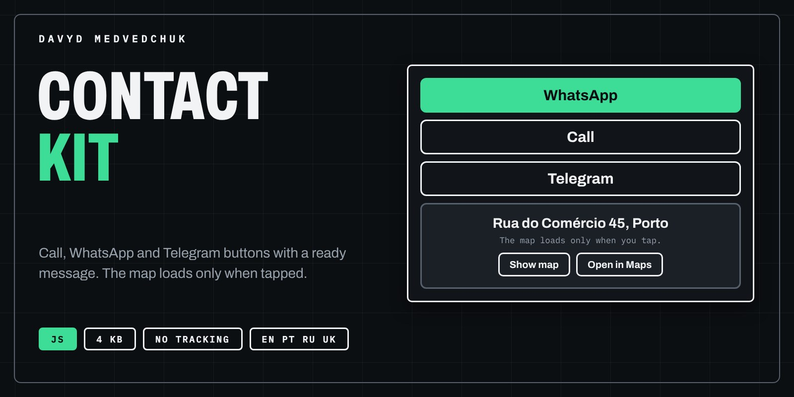
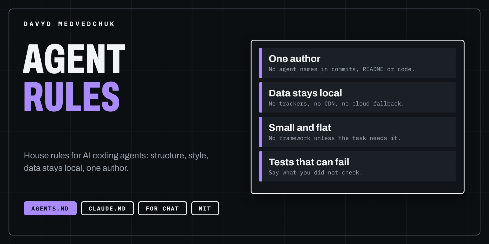

FotoObra
Photo reports for construction sites. Shoot, say what was done, add dimension arrows right on the photo, send a PDF to the client on WhatsApp.

Photo reports for construction sites. Shoot, say what was done, add dimension arrows right on the photo, send a PDF to the client on WhatsApp.

A quick estimate for kitchens, bathrooms and installation. Six taps, a price with a range, a message for the client on WhatsApp.

Resize, compress and convert photos right in the browser. Set a size or a max file size, pick a format, save as files, a ZIP or one PDF. HEIC works too.

Merge, split, reorder and rotate PDF pages in the browser. Edit text, add a stamp or a signature, fill forms, compress, crop. Photos (HEIC too) become pages. Scans become searchable with OCR. A Python command line does the basics in a terminal.
Test version: launched, not checked by me yet.

Photo or scan in, text out. A small C++ module compiled to WebAssembly straightens the page and cleans up shadows before Tesseract reads it. English, Portuguese, Russian, Ukrainian. A Python command line does the same in a terminal.
Test version: launched, not checked by me yet.

Gives an AI assistant hands for documents: read a scan, merge and shrink PDFs, shrink photos. It works on your computer and only inside one folder you choose. Nine tools, written in Python.
Test version: launched, not checked by me yet.

Paste a page, get a short list of what to fix: no mobile viewport, images without alt text, scripts that block loading. A Python command line can fetch a site itself and weigh its images.
Test version: launched, not checked by me yet.

WhatsApp, Telegram, call and email buttons with the message already typed, plus a map that loads only when someone taps it. One 4 KB file for small business sites, with a form that writes the snippet for you.
Test version: launched, not checked by me yet.

My house rules for AI coding agents: small structure, plain style, data stays on the device, one author. One file for a repository and a version to paste into a chat.
Test version: launched, not checked by me yet.